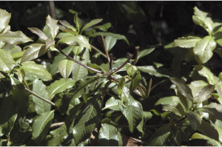

Images :



| Habit : | Small trees up to 8 m tall. |
| Leaves : | Leaves simple , alternate , spiral ; petiole 0.5-1.5 cm long, planoconvex in cross section, hirsute when young; lamina 5.5-10 x 2.5-5 cm, elliptic-obovate or oblanceolate , apex rounded or shortly acuminate , base cuneate - attenuate or rounded , margin serrate and slightly undulate , coriaceous , glabrous or atleast sparsely hirsute on midrib beneath; midrib canaliculate above; secondary_nerves 8-14 pairs, looped near margin; tertiary_nerves broadly reticulate . |
| Inflorescence / Flower : | N/A |
| Fruit and Seed : | N/A |